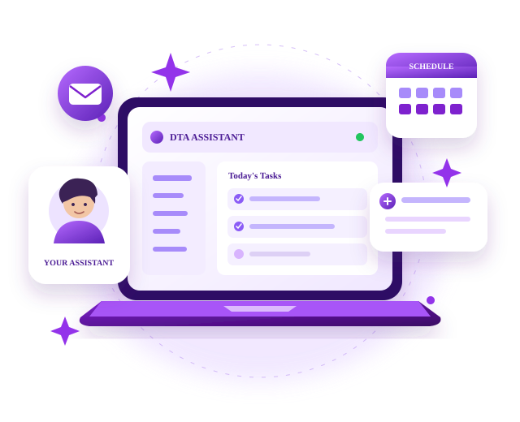

YouTube creators
Content research, competitor reviews, publishing support and subscriber communication.
- Topic & competitor research
- Upload and publishing support
- Content planning
Flexible digital support for creators and businesses who need consistency without the cost and complexity of a full-time team.

We work around an agreed task list and workflow. First, we understand your existing tools, audience and workload. Then we define clear responsibilities, communication and priorities.
Choose focused support for recurring tasks or combine services into a practical workflow.
Content research, competitor reviews, publishing support and subscriber communication.
Support for consistent planning, captions, Stories, scheduling and audience interaction.
Keep launches, updates and recurring digital tasks organised around your schedule.
Practical help for online updates and the recurring tasks that need consistency.
Every working relationship starts with clarity so both sides know what is being handled and how progress is shared.
Start a conversationWe review your current workload, tools and recurring tasks.
We agree on the task list, communication and working rhythm.
Tasks move through an organised process with practical updates.
We refine the workflow as priorities and requirements change.
✓ More consistent publishing and updates
✓ Better organised research and planning
✓ Timely audience communication
✓ A clearer recurring workflow